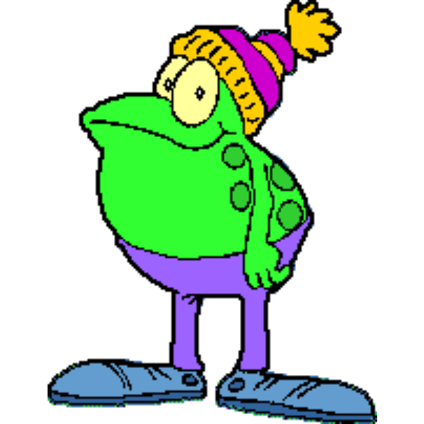

There is a frog on my website.
I don't remember putting a frog on my website. This is concerning.
The Frog
Here is the frog in question:

THE SUSPECTIt appears to be completely normal.
It has eyes. It has legs. It even has a cool hat! It appears to have no obvious malicious intent.
However, I cannot rule anything out.
Possible explanations
I have developed several theories:
1. Decoration
The simplest explanation is that the frog is just decoration. This is unfortunately the most boring explanation, and therefore I refuse to accept it.
2. Branding
Perhaps the frog is part of the site's identity. This would explain why it keeps coming back. It would not explain why nobody asked the frog for permission.
3. The frog owns the website
This theory has considerably more evidence behind it than I would like. Notice how the frog is always present. I am merely writing the HTML. I am merely writing the HTML.
The frog is watching.
The investigation continues
I inspected the source code. I inspected the CSS. I checked the image directory. The frog was everywhere. At this point, I have accepted that removing it would probably be dangerous.
Conclusion
After extensive investigation, I have reached a scientifically valid conclusion:
The frog has no explanation!
It is simply here.
And honestly, I'm okay with that.
Case closed. The frog remains.